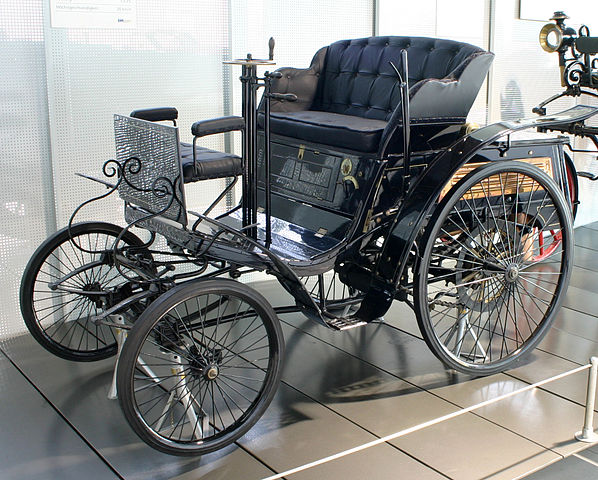

Автомобиль
Автомоби́ль (от др.-греч. αὐτός — сам и лат. mobilis — подвижной, скорый) — моторное дорожное и внедорожное транспортное средство, используемое для перевозки людей и грузов. Основное назначение автомобиля заключается в совершении транспортной работы. Автомобильный транспорт в промышленно развитых странах занимает ведущее место по сравнению с другими видами транспорта по объёму перевозок пассажиров. Современный автомобиль состоит из 15—20 тысяч деталей, из которых 150—300 являются наиболее важными и требующими наибольших затрат в эксплуатации. Понятие включает легковой автомобиль, грузовой автомобиль, автобус, троллейбус, бронетранспортёр, но не включает сельскохозяйственный трактор и мотоцикл.
Классификация
- Легковой автомобиль — полной массой не более 3500 кг для перевозки пассажиров (от 1 до 8, не включая водителя) и багажа. Легковые автомобили выпускаются с закрытыми кузовами (седан, лимузин, купе, хетчбэк, универсал, фургон и микроавтобус) и с кузовами, верх которых убирается (кабриолет, родстер, ландо и фаэтон).
- Грузовой автомобиль (грузовик) — автомобиль для перевозки грузов. На грузовых шасси выпускают также автомобили специализированного и специального назначения.
- Автомобиль особо большой грузоподъёмности — автомобиль, автопоезд или другое автотранспортное средство, нагрузки на ось которого превышают 120 кН (12 тонн силы), а габарит по ширине — более 2,5 м.
- Автомобиль повышенной проходимости — легковой или грузовой автомобиль с приводом более чем на одну ось (или с ведущей одной осью, но возможностью блокировки осевого дифференциала), приспособленный для передвижения вне дорог с твёрдым покрытием. Автомобили повышенной проходимости оснащают трансмиссиями с расширенным диапазоном передаточных чисел, а также шинами со специальным рисунком протектора, часто с централизованной регулировкой давления в шинах и прочими техническими особенностями.
- Внедорожник — автомобиль, приспособленный для передвижения по дорогам всех типов, в том числе без твёрдого покрытия (грунтовым и полевым). Вседорожники обычно характеризуются приводом на все колёса, повышенным клиренсом.
- Багги — лёгкий вседорожник. Обычно имеет открытую рамную конструкцию.
- Пикап — грузо-пассажирская модификация на базе легкового автомобиля или внедорожника с открытой платформой с задним откидным бортом. Грузоподъёмность от 150 до 4500 кг.
- Плавающий автомобиль (Машина-амфибия)
- Летающий автомобиль
- Спортивный автомобиль — автомобиль, имеющий высокие скоростные качества, повышенную мощность мотора и низкую посадку кузова.
- Гоночный автомобиль — автомобиль, созданный специально для спортивных соревнований.
- Рекордно-гоночный автомобиль — автомобиль, созданный специально для установления рекордов для автомобилей (обычно на специальной трассе, без конкурирующих автомобилей, исключительно по секундомеру).
- Автобус — автомобиль для перевозки более 8 пассажиров, не являющийся троллейбусом.
- Троллейбус — автомобиль, предназначенный для перевозки более 8 пассажиров, с питанием электроэнергией от внешнего контактного провода.
По типу двигателя:
- Паровой
- Бензиновый
- Дизельный
- Газовый
- Газогенераторный
- Водородный
- Электромобиль
- Гибридный автомобиль
Автомобили специального назначения (колёсные):
- Гражданского назначения:
- Tягач
- Автомобиль скорой помощи
- Kатафалк (транспорт)
- Cнегоочиститель
- Aвтокран
- Aвтовышка
- Mусоровоз
- Пожарный автомобиль
- Полицейский автомобиль
- Военного назначения:
- Бронеавтомобиль
- Колёсный бронетранспортёр
- Автомобильная техника военного назначения
Автомобили специализированные (колёсные):
- Гражданского назначения
- Aвторефрижератор
- Aвтоцистерна
Конструкция автомобиля
Несмотря на большое разнообразие производимых автомобилей, в их устройстве всегда можно выделить три основных части: шасси (складывается из: трансмиссии, ходовой части и механизмов управления — рулевое управление и тормозная система), кузов (служит для размещения людей или грузов) и двигатель.
Производство автомобилей
Производитель автомобилей — автозавод, компания, фирма, занимающаяся разработкой, изготовлением или сборкой автомобилей. В начале XX века Oldsmobile совершил революцию в автомобильной промышленности, впервые применив конвейерную сборку и дав старт мировой массовой автомобилизации.
Крупнейшие компании-производители (на 2012 год):
- General Motors (США + Великобритания + Австралия + Германия) — 9,03 млн.шт.
- Volkswagen Group (Германия + Франция + Италия + Испания + Великобритания) — 8,16 млн.шт.
- Toyota (Япония) — 8 млн.шт.
- Hyundai Motor (Южная Корея) — 6,59 млн шт.
- Ford (США) — 6,3 млн шт.
- Renault-Nissan (Япония + Франция + Южная Корея + Румыния + Россия) — 6,16 млн шт.
Многие десятилетия мировым лидером автомобильного производства были США. С 1980-х годов новым лидером стала Япония, с 2009 года — Китай, который с 2010 года производит также больше автомобилей, чем все страны Евросоюза вместе взятые, а с 2009 года является крупнейшим рынком в мире.
История
В 1769 году французский изобретатель Кюньо испытал первый образец машины с паровым двигателем, известный как «малая телега Кюньо», а в 1770 году — «большую телегу Кюньо». Сам изобретатель назвал её «Огненная телега» — она предназначалась для буксировки артиллерийских орудий.
Первые известные чертежи автомобиля (с пружинным приводом) принадлежат Леонардо да Винчи (стр. 812R Codex Atlanticus), однако ни действующего экземпляра, ни сведений о его существовании до наших дней не дошло. В 2004 году эксперты Музея истории науки из Флоренции смогли восстановить по чертежам этот автомобиль, доказав тем самым правильность идеи Леонардо. В эпоху Возрождения и позже в ряде европейских стран «самодвижущиеся» тележки и экипажи с пружинным двигателем строились в единичных количествах для участия в маскарадах и парадах.
«Тележку Кюньо» считают предшественницей не только автомобиля, но и паровоза, поскольку она приводилась в движение силой пара. В XIX веке дилижансы на паровой тяге и рутьеры (паровые тягачи, то есть безрельсовые паровозы) для обычных дорог строились в Англии, Франции и применялись в ряде европейских стран, включая Россию, однако они были тяжёлыми, прожорливыми и неудобными, поэтому широкого распространения не получили.
В 1791 году русским изобретателем Иваном Кулибиным была изготовлена «самокатная повозка».
Были отдельные случаи построения легковых автомобилей как предметов роскоши. Так, в историю вошёл La Marquise (официальное название — De Dion-Bouton et Trepardoux), построенный в 1884 году и работавший на паровой тяге.
Появление лёгкого, компактного и достаточно мощного двигателя внутреннего сгорания открыло широкие возможности для развития автомобиля. В 1885 году немецкий изобретатель Готтлиб Даймлер, а в 1886 году его соотечественник Карл Бенц изготовили и запатентовали первые самодвижущиеся экипажи с бензиновыми двигателями. В 1895 году Бенц изготовил первый автобус с ДВС. В 1896 году Даймлер изготовил первое такси и грузовик. В последнем десятилетии XIX века в Германии, Франции и Англии зародилась автомобильная промышленность.
В первой четверти XX века широкое распространение получили электромобили и автомобили с паровой машиной. В 1900 году примерно половина автомобилей в США была на паровом ходу, в 1910-х в Нью-Йорке в такси работало до 70 тыс. электромобилей.
В том же 1900 году Фердинанд Порше сконструировал электромобиль с четырьмя ведущими колёсами, в которых располагались приводящие их в движение электродвигатели. Через два года голландская фирма Spyker выпустила гоночный автомобиль с полным приводом, оснащённый межосевым дифференциалом.
Первый гоночный автомобиль был оснащён двигателем мощностью 35 л. с. и был доставлен Эмилю Еллинеку от DMG 22 декабря 1900 года. Этот «Мерседес» был разработан Вильгельмом Майбахом, главным инженером DMG, и включал инновационные конструкторские решения: длинную колёсную базу, широкую колею и низкий центр тяжести, стальную раму, сотовый радиатор и рулевое колесо. Лёгкий и высокопроизводительный двигатель достигал 75 км/ч и мог набирать от 300 до 1000 оборотов в минуту. В нём было 4 цилиндра и соотношение каждого цилиндра на ход поршня составлял 116×140 мм. Объём — 5918 см³. Для каждой пары цилиндров стоял свой карбюратор, два распределительных вала и контролируемые впускные клапана, низковольтное магнето зажигания.
Братья Стэнли производили около 1000 автомобилей в год. В 1909 году братья открыли первую в Колорадо гостиницу люкс-класса и от железнодорожной станции до гостиницы гостей возил паровой автобус, что стало фактическим началом автомобильного туризма. Фирма Stanley выпускала автомобили на паровом ходу до 1927 года. Несмотря на ряд достоинств (хорошая тяга, многотопливность) паровые автомобили сошли со сцены к 1930-м годам из-за своей неэкономичности и сложностей при эксплуатации.
Немалый вклад в широкое распространение автомобильного транспорта внёс американский изобретатель и промышленник Генри Форд, с 1913 года внедривший конвейерную систему сборки автомобилей.
В 1923 году фирма Бенца изготовила первый грузовой автомобиль с двигателем Дизеля.